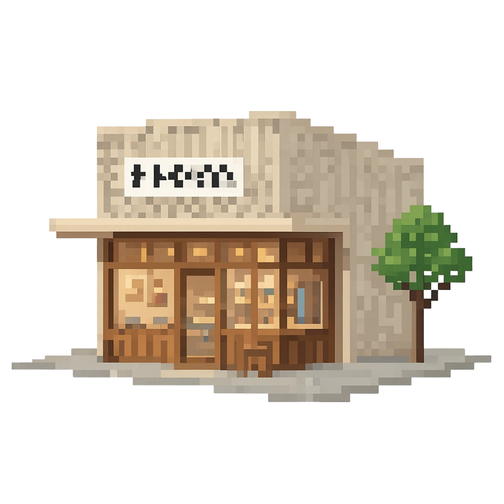

Missatge d'error
Se't presentaran 30 retalls de premsa aleatoris. Identifica el mercat i els agents econòmics relacionats amb cadascun d'ells.

Has completat la prova. Aquesta és la teva puntuació final: